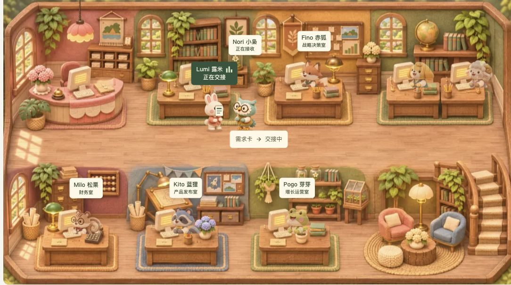
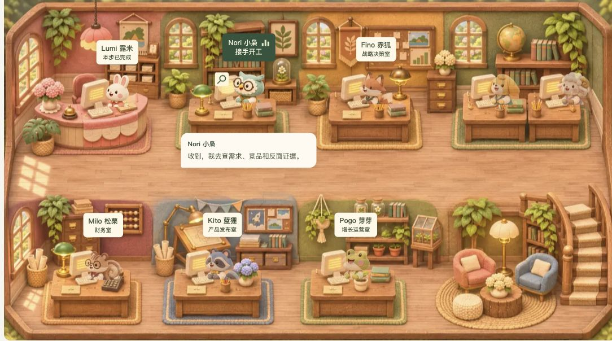

首客办公室
UI/UX 设计交付
从“谁在工作”，到“成果交给谁”，让办公室自己把流程说清楚。
2026-11-08 · Asia/Shanghai · 快照基准 d2c09c9
核心视觉提交 fe432a3，包含姓名悬停动效与 d2c09c9 的交接列宽调整。
这次确定的表现
工作状态在上方表达取消桌面/脚底光圈；任务牌、三条工作条、动物头部/手部动作和职责工具共同表达当前任务。
交付物成为链路中心左右角色、中间文件和方向线，让人看清发起者、产物、接收者；人工确认单独说明。
按角色理解服务路线六幕动物导航与两列三行角色说明相连。Free 起点与可选 Pro 路线分开，关键决策继续由人确认。
实际浏览器效果
以下均来自交接基准的实际页面，点击可看原尺寸。手机截图保留周边上下文，测量请使用 CSS 和采集元数据。
一幕内的三张关键分镜
20 秒一幕：0-4 秒处理，4-8 秒送件，8-8.7 秒核对，8.7-10.5 秒交付，10.5-13 秒返回，13-20 秒接手开工。
01 / 工作中：上方任务牌与工作条
02 / 当面核对：标题错层与文件交接
03 / 接手开工：让下一位的工作可见 这里是机制演示。真实项目状态由保存的任务、审批与订单记录计算；本演示不调用模型，不确认付款，不推进发布。暂停、离屏、后台和减少动态路径保留文字内容。
审阅双语文案与角色分工
下面的审阅器只切换包内静态内容；实际动画查看线上页面或源码。完整文案来自 实现导出的 JSON。
Toby 托比：老板形象，负责关键审批；Yuki 云团：绵羊 COO，负责站会与经营复盘。
原有品牌中的清晰层级
纸面#fbfaf8
交接深绿#243b2d
操作绿色#456447
文件纸面#fff7df
说明文字#d5ddcc
工作条#e6edc9
交接标题 25-36px，手机 24px；姓名 25px；对白 16px / 1.9；决策说明 15px / 1.85。沿用现有衬线与 sans 字体栈，不新增字体下载。
600px 以下交接改为竖向、片段导航为三列两行；六位 Agent 介绍保持两列三行。首页画布最小宽 760px，真实项目地图最小宽 680px，手机通过横向查看和镜头跟随保证角色大小。
已记录的后续项：320px 英文首屏 CTA 会造成整页横向溢出；办公室交接组件自身没有溢出。详见验收清单，不能将组件走查等同全站已适配。
前端可以直接对接的文件
包内 source/ 为 18 份源码摘录，完整工程以原仓库固定提交为准。assets/ 提供背景、动作图集和角色插画图集。图集索引与工位坐标在 tokens.json 中，两个图集不要混用索引。
查看版本说明
{
"date": "2026-11-08",
"timezone": "Asia/Shanghai",
"repository": "kongleiwork-art/firstcustomer",
"sourceCommit": "d2c09c9258e3ebb7fb5465745a9df371e63a6e61",
"designCommits": [
"b437d46",
"fe432a3",
"d3e1684",
"d2c09c9"
],
"kind": "versioned design handoff snapshot"
}